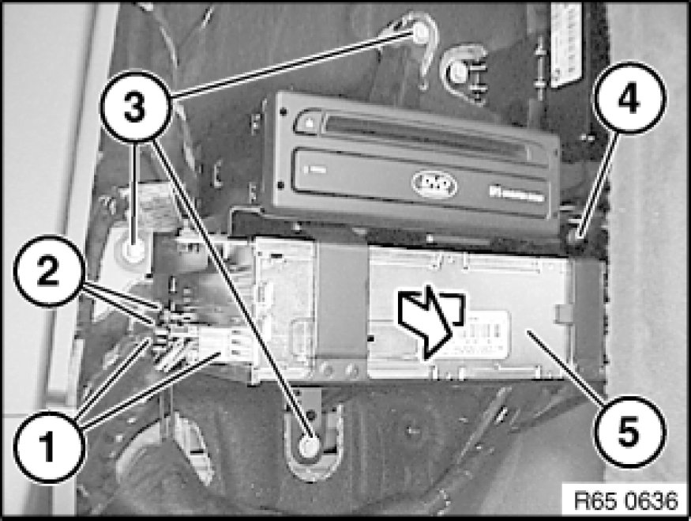
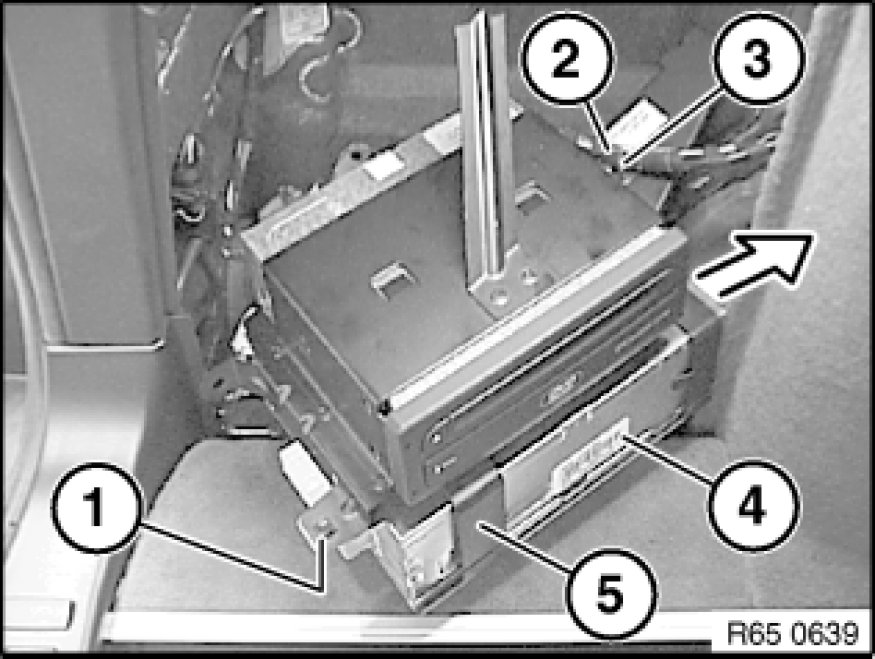

Entertainment System Control Module: Service and Repair
65 50 011 - Removing and installing (replacing) video module for on-board monitor

Important!
Read and comply with notes on protection against electrostatic damage (ESD protection) 61 35 ... Notes on ESD Protection (Electro Static Discharge).

Necessary preliminary tasks:
- Disconnect battery negative lead Instructions for Disconnecting and Connecting Battery
- Remove flap in luggage compartment panel on left Removing and Installing/Replacing Flap In Luggage Compartment Trim, Left or Right.

Unlock plug connections (1) and disconnect.
Installation Note:
Do not mix up antenna connectors (2).
Mark antenna plugs (2) and disconnect.
Release screws (3).
Release nut on stud (4).
Guide video module for on-board monitor (5) with holder over stud (4) and feed out in direction of arrow.

Release screw (1).
Unclip wiring harness (2) at point (3) and pull video module for on-board monitor (4) with holder (5) out of side recess slightly.
Feed video module for on-board monitor (4) in direction of arrow out of holder (5) and remove.

Replacement:
Carry out programming/coding Programming and Relearning.